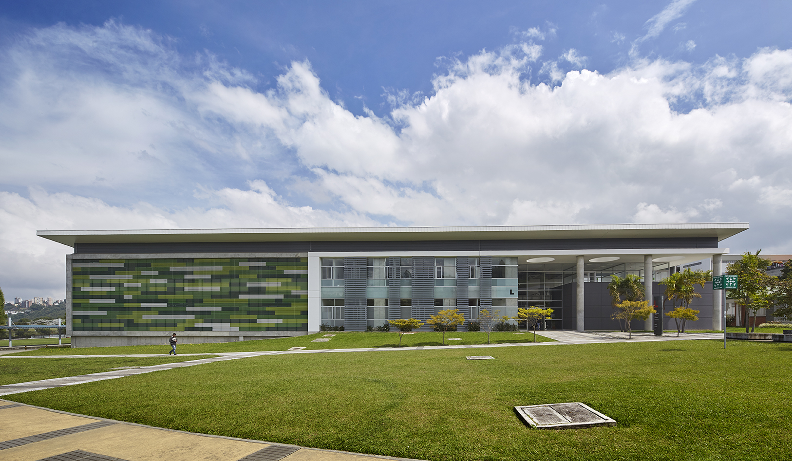
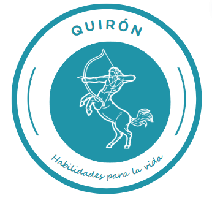

Capacitación
Habilidades para la vida
UNAL 2024


BOOTCAMP
Entrenamiento psicoeduvativo
para prácticas profesionales
Bienvenidos!!!
¡Has dado el primer paso hacia un futuro lleno de oportunidades!
Experiencias Eduterapéuticas
Esta formación te guiará en para desarrollar competencias blandas que te prepararán para enfrentar con bienestar, confianza y éxito los desafíos de adaptabilidad en la inserción laboral durante tus prácticas profesionales.
Descubre cómo transformar cada capacitación en una herramienta poderosa para tu desarrollo personal y profesional, con una metodología innovadora y eficaz.
Prepárate para destacarte, resolver problemas con asertividad
y construir un camino hacia una carrera brillante.
¡Tu futuro comienza aquí y ahora!
¡Has dado el primer paso hacia un futuro lleno de oportunidades!
Experiencias Eduterapéuticas
Esta formación te guiará en para desarrollar competencias blandas que te prepararán para enfrentar con bienestar, confianza y éxito los desafíos de adaptabilidad en la inserción laboral durante tus prácticas profesionales.
Descubre cómo transformar cada capacitación en una herramienta poderosa para tu desarrollo personal y profesional, con una metodología innovadora y eficaz.
Prepárate para destacarte, resolver problemas con asertividad
y construir un camino hacia una carrera brillante.
¡Tu futuro comienza aquí y ahora!
"Este entrenamiento de prácticas es más que un conjunto de directrices;
es la brújula que guiará a nuestros estudiantes en su transición
de lo académico a lo profesional, asegurando que cada intervención
en las instituciones se realice con el más alto estándar de ética,
conocimiento y compromiso social."
Decana Facultad
.png)
Entra en los emojis para más info ⬇
🚀
👨🏼🎓
🙋🏽♂️
Comunicación
Liderazgo
Bienestar


.png)